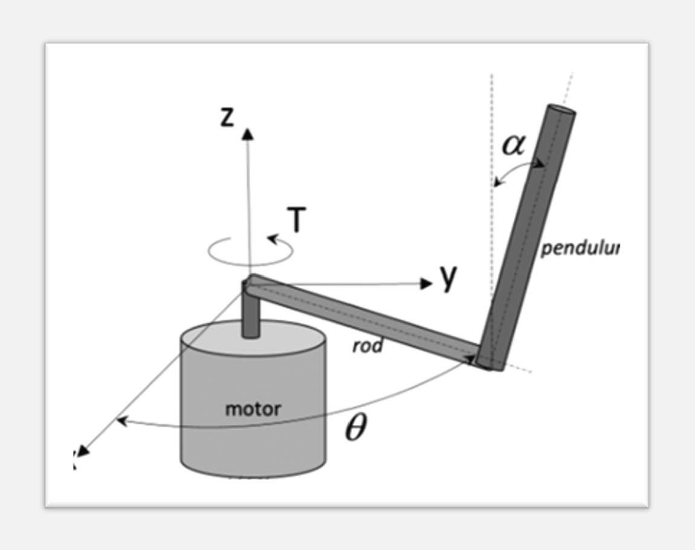
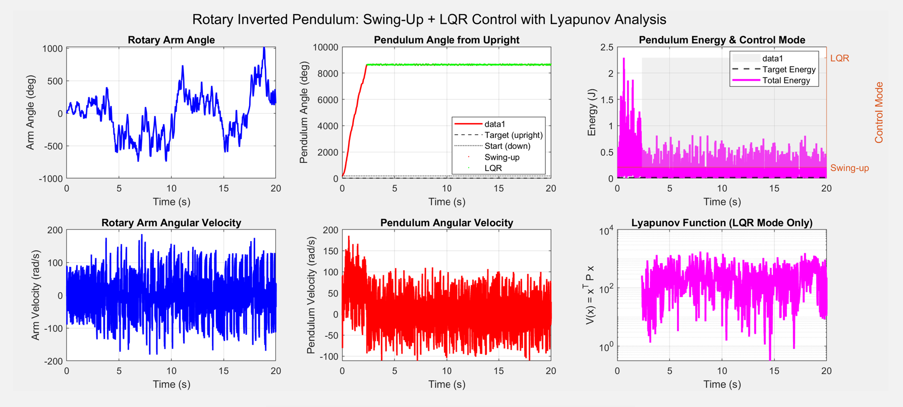
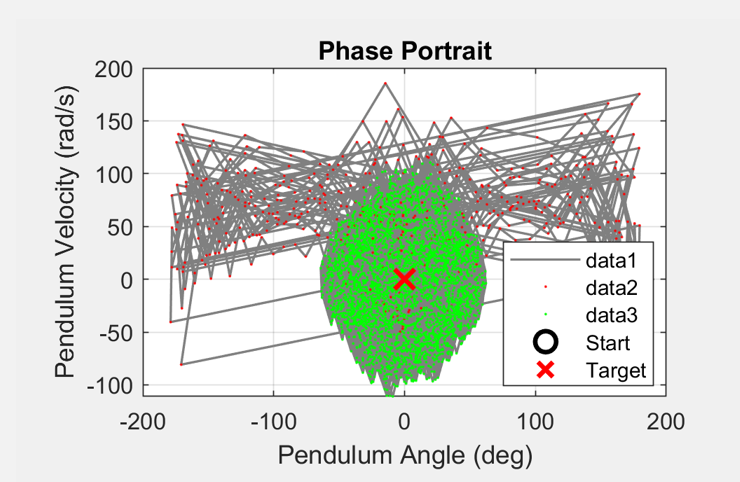

Controller Simulation of Complex Dynamics
For the final project of my Advanced Robotics classwork, I chose to create and simulate a controller for an inverted rotary pendulum. The system consists of one arm that rotates around a central base in the horizontal plane, and one pendulum that swings freely in the vertical plane. The input to the system is the torque supplied to the central arm. The goal is to bring the pendulum to equilibrium in the upright position. This is a classic problem in robotics as the underlying dynamics are rich, nonlinear, and unstable. Here I will give a general overview of how I created a controller for this system and give a link to my final paper.


The above image shows the results of running a simulation of the controller in MATLAB. The initial angle of the pendulum is approximately 80 degrees from upright. The controller initially starts in the nonlinear region, pumping energy into the system until the pendulum reaches withing 15 degrees of upright. At this point, the system switches into the LQR controller region. This linear region is good enough to approximate the dynaimcs of the pendulum around the upright as small angle approximation is valid enough within this region. As can be seen from the graphs, the pendulum reaches the linearzation region within 2 seconds and stabilzes there with some oscillation.

The phase portrait is slight messy but it paints a good picture of the behavior of the system. Initially during the nonlinear region, the phase is unpredictable and moves rapidly as energy is pumped into the system. Once it reaches the linear region, Phase stays within the central area, showing converges to the uproght position.